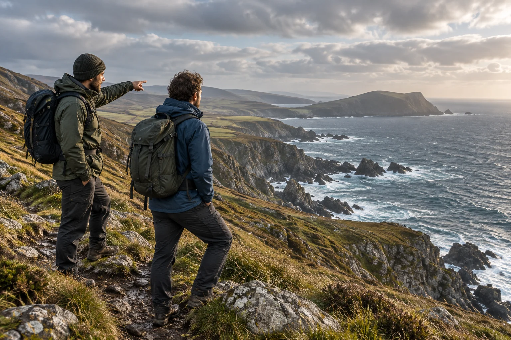
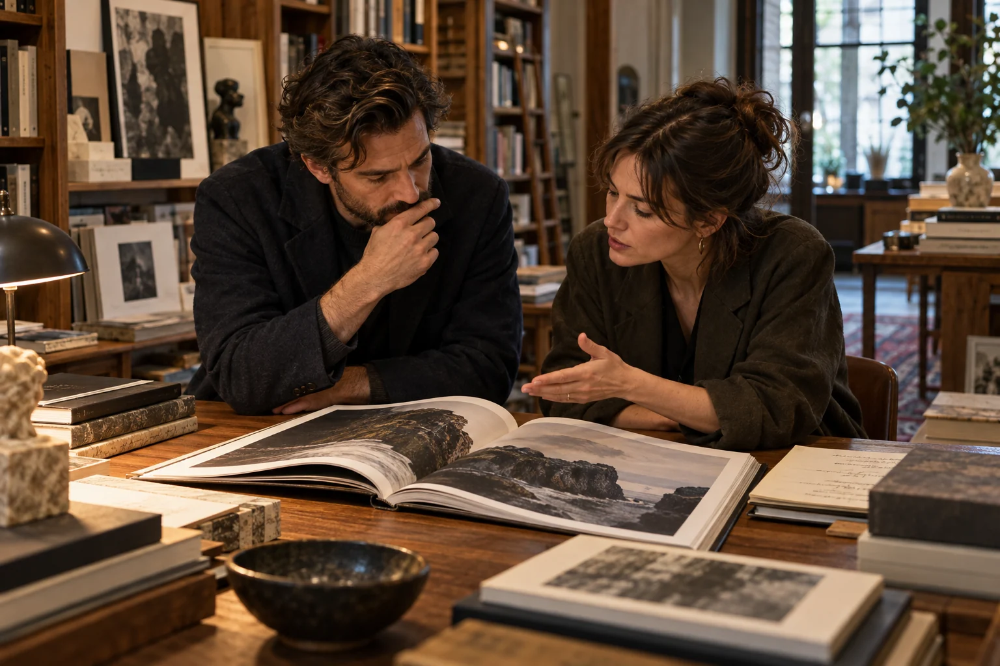
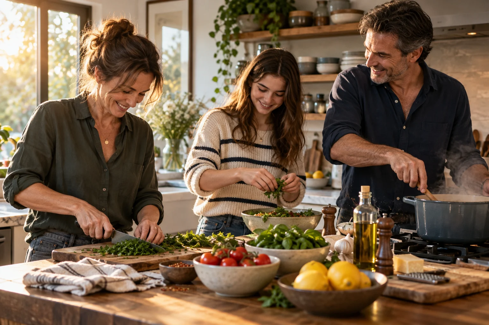
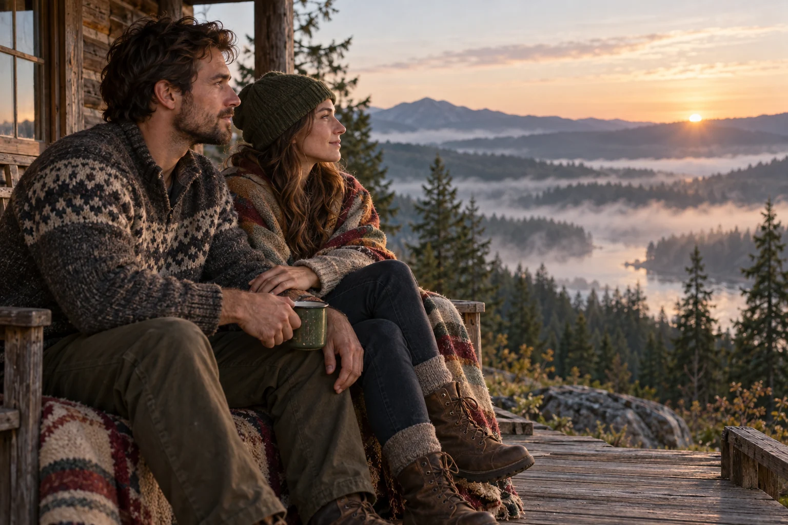

The City Beyond the Blue Dot
Let your phone get you there. Then learn the place between.
Read the storyThe lives we're building.
Body, presence, and the things we give our attention to.
Take the wider view.
Five doors into a life with more texture.
Strength
Latest Strength feature
Training · recovery · mindset
02Style
Latest Style feature
Clothing · grooming · design

03Explore
Latest Explore feature
Cities · journeys · discovery

04Culture
Latest Culture feature
Books · music · film · ideas

05Living
Latest Living feature
Recipes · relationships · psychology · spirit

A practice for today
A short, grounded reflection drawn from today’s Living story.
Stay for the good part.
Today’s five stories are featured above. Save the ones you want to return to, or explore every story in the archive.
Strong enough to sweat.
Curious enough to stay.
Hike until the legs speak up. Come home, cook something worth sharing, pull on a good jacket, train again tomorrow. Make room for the people and practices that keep you grounded.
Find your next perspective ↗